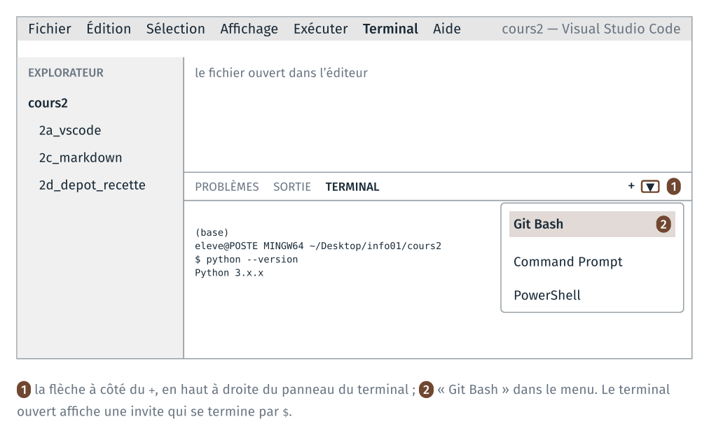

TD 2a — Configurer VS Code#
Note
Les fichiers des TD de la séance sont dans l’archive info01-cours2_v2.zip.
Version 2 du cours 2 : proposition de travail pour 2027-2028. Ce guide reprend des parties du guide du TD 1c de 2026 ; VS Code y est lancé depuis le menu Démarrer, et son terminal est Git Bash.
Le TD configure l’éditeur de code du module, VS Code, pour le reste de l’année. Il se fait en classe entière : l’enseignant projette chaque étape, chacun la fait sur son poste, et la salle passe à l’étape suivante quand tout le monde a fini. Il dure vingt-cinq minutes. Le guide peut se lire avant la séance, et le TD se commencer seul.
La configuration se fait une fois par poste. Elle reste pour les séances suivantes : les postes de la salle gardent les réglages d’une séance à l’autre.
Étape |
Objectif |
Ce qu’on fait |
|---|---|---|
1 |
récupérer les fichiers de la séance en ligne de commande |
copier et décompresser les fichiers de la séance, dans Git Bash |
2 |
ouvrir un projet dans l’IDE |
lancer VS Code et ouvrir le dossier |
3 |
donner à l’IDE le langage du projet |
installer l’extension Python |
4 |
utiliser le terminal du cours 1 dans l’IDE |
faire de Git Bash le terminal de VS Code |
5 |
choisir le Python qui exécute le code |
choisir l’interpréteur Python, et lancer un programme |
6 |
régler l’IDE, et lire où ses réglages sont écrits |
deux réglages, puis leur fichier |
Chaque étape se termine par une vérification. Une étape dont la vérification échoue se reprend avant de passer à la suivante ; la fin de chaque étape donne la marche à suivre dans les cas rencontrés en 2026.
1 · Copier et décompresser les fichiers de la séance#
À faire : copier l’archive de la séance dans
Desktop\info01; la décompresser dans Git Bash.À obtenir :
ls cours2affiche les quatre dossiers des TD.
Copier l’archive#
Comme au cours 1 : sur le Bureau, ouvrir le raccourci formationTemp,
copier info01-cours2.zip, et le coller dans le dossier info01 du
Bureau, à côté de cours1. Ne pas travailler dans formationTemp, dossier
du serveur commun à toute la promotion.
Décompresser dans Git Bash#
Ouvrir Git Bash (menu Démarrer, « Git Bash »), puis :
cd ~/Desktop/info01
ls
ls affiche cours1/ et info01-cours2.zip. Puis :
unzip info01-cours2.zip
unzip affiche une ligne par fichier extrait (creating: pour un dossier,
inflating: pour un fichier).
Vérification :
ls cours2
2a_vscode/ 2b_erreurs/ 2c_markdown/ 2d_depot_recette/
Si unzip affiche command not found, décompresser à la souris : clic
droit sur l’archive, « Extraire tout… », en effaçant la fin du dossier
proposé pour garder Desktop\info01.
Si l’invite de Git Bash ne commence pas par (base), la configuration de
conda dans Git Bash, faite au TD 1d, manque sur ce poste. La
faire maintenant, avant l’étape 4 :
source /c/ProgramData/anaconda3/etc/profile.d/conda.sh
conda init bash
puis fermer Git Bash et le rouvrir.
2 · Lancer VS Code et ouvrir le dossier de la séance#
À faire : lancer VS Code depuis le menu Démarrer ; ouvrir le dossier
Desktop\info01\cours2.À obtenir : l’explorateur de VS Code affiche les quatre dossiers des TD.
Menu Démarrer, taper « Visual Studio Code », Entrée. La page d’accueil de VS Code s’ouvre.
Menu File, Open Folder… Dans la fenêtre, aller dans le Bureau, puis
info01, cliquer une fois surcours2, et « Sélectionner un dossier ».Une fenêtre demande si l’on fait confiance aux auteurs des fichiers du dossier : répondre « Yes, I trust the authors ». Sans cette réponse, VS Code ouvre le dossier en mode restreint, et les extensions n’y fonctionnent pas.
La fenêtre a trois zones : l’explorateur à gauche (Ctrl + Maj + E),
le fichier ouvert au centre, le terminal en bas (menu Terminal, New
Terminal). Le dossier ouvert est le projet : l’explorateur montre ses
fichiers, la recherche s’y fait, et le terminal s’y ouvre.
VS Code s’affiche en anglais. Le guide donne les intitulés anglais.
Vérification : l’explorateur affiche 1A_VSCODE, 2A_MARKDOWN et
3A_DEPOT_RECETTE sous le titre COURS2.
3 · Installer l’extension Python#
À faire : ouvrir un programme Python ; installer l’extension
ms-python.python.À obtenir : l’extension « Python » de Microsoft dans la liste des extensions installées.
Un programme avant l’installation#
Dans l’explorateur, ouvrir 2a_vscode, puis cliquer sur altitudes.py.
Le programme du cours 1 s’ouvre au centre.
À noter : si le texte est coloré, alors qu’aucune extension Python n’est encore installée.
Installer l’extension#
Ouvrir le panneau Extensions :
Ctrl+Maj+X, ou l’icône des quatre carrés dans la barre de gauche.Dans la zone de recherche en haut du panneau, taper l’identifiant de l’extension,
ms-python.python.L’extension « Python », publiée par Microsoft (le nom de l’éditeur est écrit sous celui de l’extension, avec une coche bleue), vient en tête de la liste. Cliquer dessus : sa page s’ouvre à droite.
Vérifier son identifiant : à droite de la page, en bas de la colonne « Marketplace Info », la ligne « Identifier » doit indiquer
ms-python.python.Cliquer sur Install, et attendre la fin de l’installation.
Plusieurs extensions s’appellent « Python », et certaines ne viennent pas de Microsoft. Seul l’identifiant désigne sans ambiguïté la bonne, d’où la recherche par identifiant plutôt que par nom.
L’installation télécharge l’extension depuis un serveur. Sans réseau, le panneau reste vide ou l’installation ne finit pas : vérifier que la session réseau est ouverte, puis recommencer. Une extension installée le reste pour les séances suivantes.
Vérification : l’extension « Python » est dans la section « Installed » du panneau, avec « Pylance » et « Python Debugger », installées avec elle.
4 · Git Bash, terminal de VS Code#
À faire : choisir Git Bash comme terminal par défaut ; ouvrir un nouveau terminal.
À obtenir : un terminal Git Bash, dont l’invite commence par
(base).
Choisir le terminal par défaut#
Palette de commandes :
Ctrl+Maj+P. Une zone de saisie s’ouvre en haut de la fenêtre.Taper
default profile, puis choisir « Terminal: Select Default Profile ».Dans la liste (Command Prompt, Git Bash, PowerShell…), choisir « Git Bash ».
La palette de commandes donne accès à toutes les commandes de VS Code par leur nom, sans passer par les menus. Le module s’en sert souvent.
Ouvrir un terminal#
Menu Terminal, New Terminal. Le terminal s’ouvre en bas, dans le dossier
cours2.

Vérification : l’invite du terminal est
(base)
eleve@POSTE MINGW64 ~/Desktop/info01/cours2
$
(le nom du poste change d’une machine à l’autre). Puis :
python --version
affiche Python 3. suivi de la version installée par Anaconda.
Si ça bloque#
« Git Bash » n’est pas dans la liste. Fermer VS Code et le relancer ; VS Code cherche les terminaux au démarrage. S’il reste absent, git n’est pas installé à l’emplacement habituel (
C:\Program Files\Git) : prévenir l’enseignant.Le terminal ouvert est PowerShell (l’invite commence par
PS). Le terminal a été ouvert avant le réglage : le fermer (icône de corbeille, en haut à droite du panneau), puis en ouvrir un nouveau. La flèche à côté du+, en haut à droite du panneau, ouvre aussi un terminal Git Bash.Le message
activate.ps1 cannot be loaded because running scripts is disabled on this system. Même cause : le terminal est PowerShell.Pas de
(base)dans l’invite, etpythonintrouvable. conda n’est pas configuré dans Git Bash sur ce poste : voir la fin de l’étape 1.
5 · Choisir l’interpréteur Python, et lancer un programme#
À faire : choisir l’interpréteur
based’Anaconda ; lanceraltitudes.pypar le bouton d’exécution.À obtenir :
moyenne : 129.0 mdans le terminal.
Choisir l’interpréteur#
Garder
altitudes.pyouvert au centre.Palette (
Ctrl+Maj+P), taper « Python: Select Interpreter », puis Entrée.Une liste apparaît, avec pour chaque Python trouvé sur le poste son nom, son chemin et son type. Choisir la ligne
base, de type Conda, dont le chemin contientanaconda3: sur les postes de la salle,C:\ProgramData\anaconda3\python.exe. Lire le chemin, et pas seulement le nom.
Le nom de l’interpréteur choisi s’affiche en bas à droite de la fenêtre, et VS Code le retient pour ce dossier.
Si la liste ne contient ni base ni aucun chemin avec anaconda3, choisir
« Enter interpreter path… », puis « Find… », et désigner le fichier
C:\ProgramData\anaconda3\python.exe.
Lancer le programme#
En haut à droite de la zone du code, cliquer sur le triangle « Run Python File ».
Vérification : le terminal affiche la commande que le bouton a tapée, puis le résultat :
moyenne : 129.0 m
La commande tapée par le bouton est python, précédé du chemin complet de
l’interpréteur choisi, suivi du chemin du fichier : la même commande que
celle tapée à la main au cours 1, avec des chemins absolus.
6 · Deux réglages, puis leur fichier#
À faire : régler, au niveau User, l’affichage des espaces et l’enregistrement automatique ; ouvrir le fichier
settings.json.À obtenir :
settings.jsoncontient les deux réglages et celui du terminal.
Deux niveaux de réglages#
Les réglages de VS Code s’ouvrent par Ctrl + ,. En haut de la page,
deux onglets :
Onglet |
S’applique à |
Fichier |
|---|---|---|
User |
tous les dossiers ouverts avec ce compte, sur ce poste |
|
Workspace |
le dossier ouvert seulement |
|
Un réglage du dossier (Workspace) l’emporte sur celui du compte (User). Le premier voyage avec le projet, et se versionne avec lui ; le second reste sur le poste.
Les deux réglages#
Dans l’onglet User :
Taper
render whitespacedans la zone de recherche. Le réglage « Editor: Render Whitespace » s’affiche ; choisiralldans sa liste.Taper
auto save. Pour « Files: Auto Save », choisirafterDelay.
Vérification : dans altitudes.py, un point gris marque chaque espace
d’indentation, comme dans Notepad++ au cours 1 ; en modifiant le fichier, le
point blanc de l’onglet (fichier non enregistré) disparaît après une
seconde.
Le fichier des réglages#
Palette (Ctrl + Maj + P), « Preferences: Open User Settings (JSON) ».
Le fichier du compte s’ouvre au centre. Il contient au moins :
{
"terminal.integrated.defaultProfile.windows": "Git Bash",
"editor.renderWhitespace": "all",
"files.autoSave": "afterDelay"
}
L’ordre des lignes peut différer, et d’autres lignes peuvent y être, écrites par les extensions. Ne rien modifier, et fermer le fichier.
Chaque réglage a un nom en plusieurs parties séparées par des points,
editor.renderWhitespace, et une valeur. L’onglet des réglages et ce
fichier montrent les mêmes réglages : l’onglet écrit dans le fichier.
Ce que le TD fait constater#
À lire après avoir fait les étapes.
L’éditeur, le langage, l’interpréteur. Le texte de altitudes.py est
coloré avant toute installation : la coloration des langages courants est
livrée avec VS Code. L’extension Python apporte le reste : le choix de
l’interpréteur, l’exécution, la vérification du code pendant la frappe.
L’interpréteur n’est pas dans VS Code : l’éditeur appelle celui
d’Anaconda, installé à part.
Le terminal de VS Code est Git Bash. Le terminal du cours 1 s’ouvre
dans la fenêtre de l’éditeur. Il lit au démarrage le fichier ~/.bash_profile
écrit par conda init bash, d’où le (base) et le python d’Anaconda.
En 2026, VS Code ouvrait un terminal PowerShell, qui n’exécutait pas le
script d’activation de conda sur les postes de la salle.
Le bouton d’exécution tape une commande. Le bouton écrit dans le
terminal la commande python … altitudes.py, avec l’interpréteur choisi à
l’étape 5. Si cet interpréteur et le python du terminal diffèrent, un
programme peut marcher par le bouton et échouer au terminal : le cours 3 y
revient, avec les environnements.
Les réglages sont du texte. L’onglet des réglages écrit dans
settings.json. Un réglage de dossier, dans .vscode/settings.json,
accompagne le projet quand il est copié ou versionné.